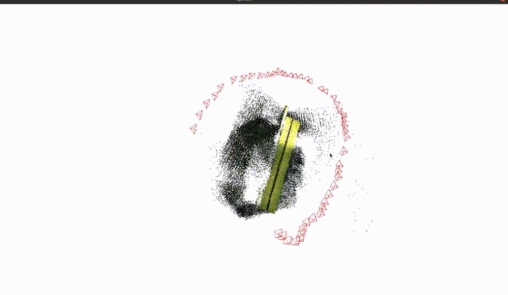
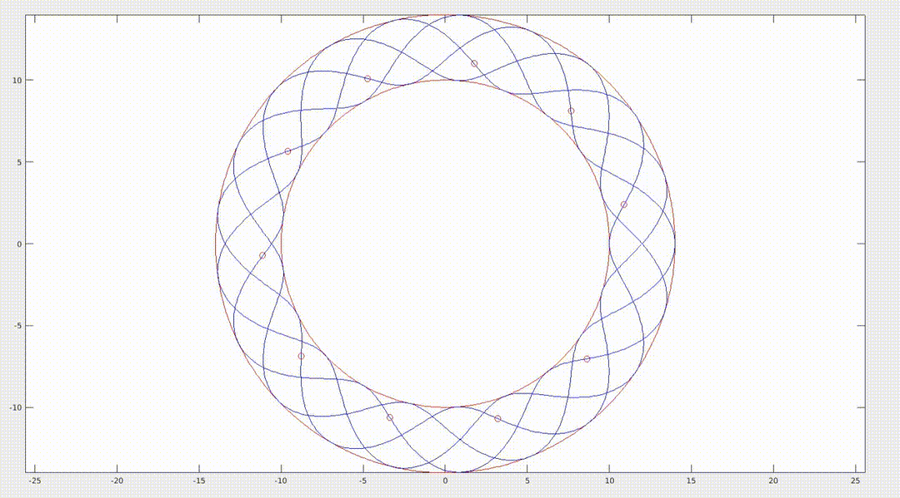
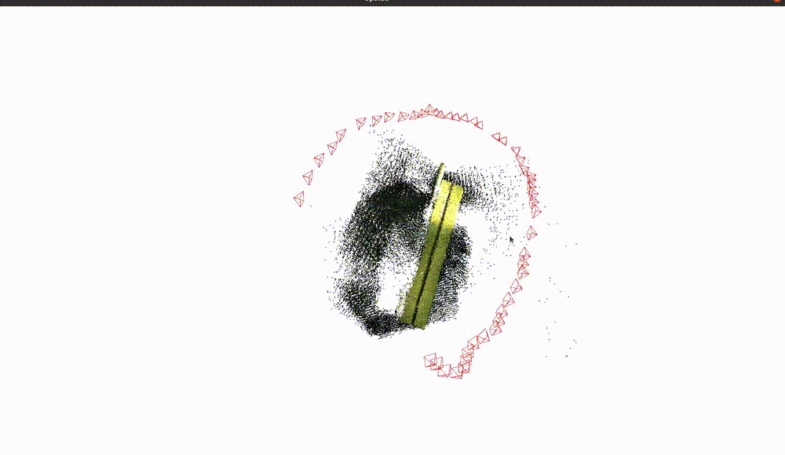
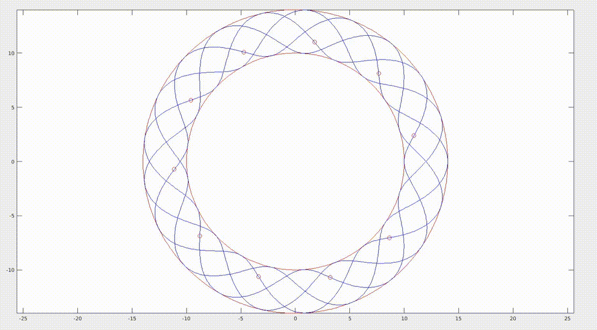
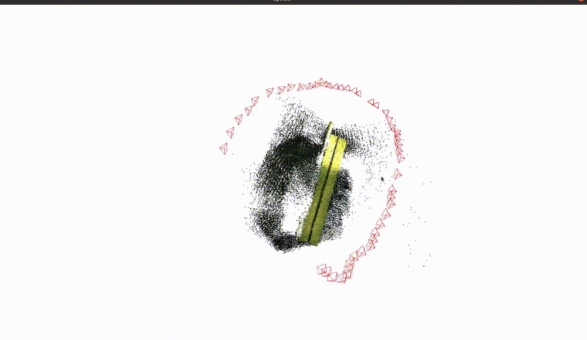
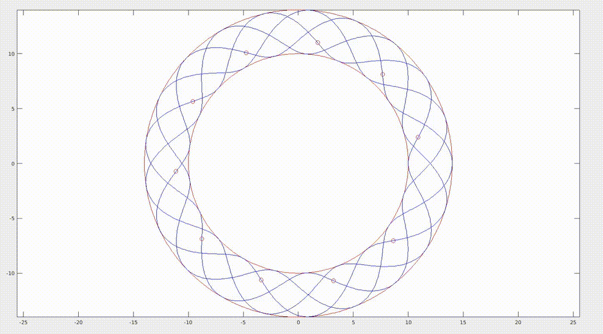

Highlights


 



I am a Master’s student in Robotics at Northeastern University, working at the intersection of multi-agent systems, computer vision, and robotic automation. I have been fortunate to collaborate with leading researchers during my time as a Research Fellow at the Centre for Visual Information Technology, IIIT Hyderabad, and as a Research Intern at the Marmot Lab, NUS, under the guidance of esteemed mentors. Previously, I worked as a Robotics Engineer at Mowito, where I deployed cutting-edge warehouse automation solutions. My research focuses on creating intelligent robotic systems that bridge the gap between perception, decision-making, and action in dynamic and unstructured environments. I am particularly passionate about developing algorithms that enable robots to collaborate, adapt, and excel in real-world tasks, from automating warehouses to improving autonomous navigation. I envision a future where robots seamlessly integrate into human environments, tackling challenges like urban driving, multi-vehicle teaming, and object manipulation with efficiency and reliability. Beyond research, I am deeply inspired by the potential of robotics to transform industries and redefine possibilities. Let’s shape the future of robotics together.
Email: rai.ut@northeastern.edu


Decision Making for Swarm Robots using human cues
Webpage |
Control and operation of Light-weight AUV model for underwater operation under drag and added-mass conditions
Formation control of multi-agent systems using Lissajous curve for area coverage with optimal agents
Detecting, Tracking and Counting Motorcycle Rider Traffic Violations on Unconstrained Roads